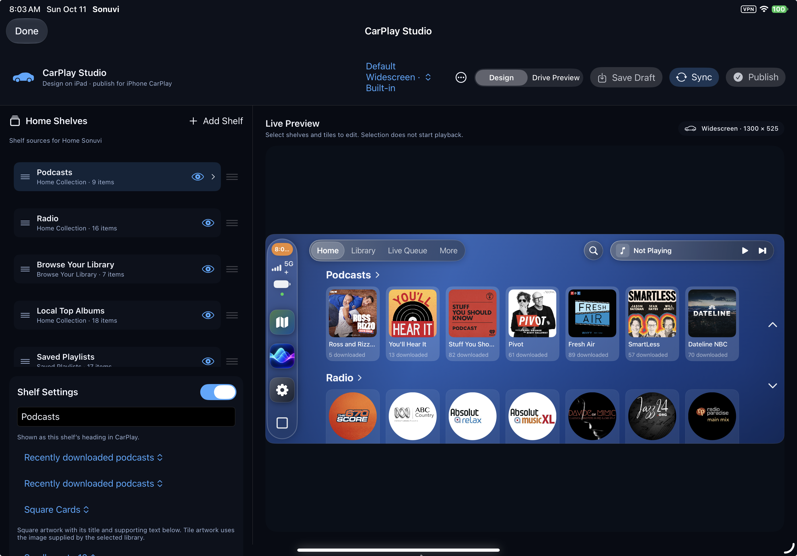
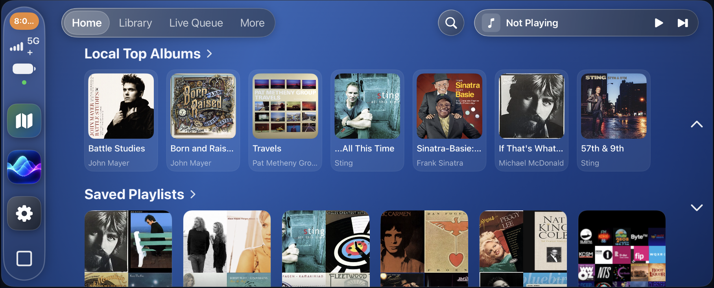

CarPlay,
your way.
Sonuvi brings your music libraries, queue, search, and now-playing controls into a native CarPlay experience built around the iPhone or iPad you already use.
CarPlay Studio
Customize the CarPlay display. On iPad, CarPlay Studio lets you design the layout you want to see in the car instead of accepting a one-size-fits-all home screen.
- Choose which Home shelves appear and arrange them in the order that makes sense to you.
- Configure tabs, page titles, and the sections available in Library and More.
- Choose artwork and card presentation styles, shelf density, and display presets while previewing the result on iPad.
- Save drafts locally, then publish a validated layout when it is ready. The active layout is applied on the next CarPlay connection.


A native music experience
Browse Home, Library, Live Queue, Vibe, and More with standard CarPlay navigation. Quick Search brings Sonuvi tracks, albums, artists, and playlists into the car, while Siri search uses the same Sonuvi library and playback model.
CarPlay uses the shared Sonuvi queue, source resolver, and player. That means local playback, attached-SSD availability, server fallback, playback metadata, artwork, and listening history keep the same behavior as the iPhone and iPad app.
Published layouts across your devices
Sonuvi includes private iCloud synchronization for published CarPlay layout revisions and your active-layout selection. Drafts stay on the device where you are designing them, and a layout change is kept stable for the current drive before taking effect on the next connection.
Built with sensible boundaries
CarPlay Studio customizes presentation and navigation; it does not create a second music catalog or a separate CarPlay-only queue. Your source libraries, playback targets, and account permissions remain governed by Sonuvi and the connected providers.
CarPlay Studio and the native CarPlay integration are implemented in the Sonuvi iOS app. Cross-device iCloud round-trip behavior, physical vehicle and Genesis validation, and physical Siri result selection remain part of the ongoing device validation work.